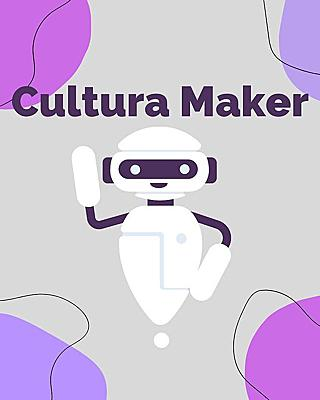

Cultura Maker
Projeto de ensino na área da tecnologia do IFRS Campus Rio Grande.
O que é o Cultura Maker?
Baseando-se na ideia de que as pessoas devem ser capazes da fabricar, construir, reparar e alterar objetos dos mais variados tipos e com diversas funções, o Cultura Maker é um projeto ensino aberto para a comunidade acadêmica do IFRS Campus Rio Grande. É uma ótima oportunidade para desenvolver a criatividade através dos minicursos de modelagem, impressão 3D, corte à laser e Arduíno.
Arduíno
Através de um arduino, damos “vida” aos protótipos das soluções desenvolvidas, realizando a leitura de sensores e acionamento dos atuadores. Na programação (nada mais é que falar ao controlador quais decisões devem ser tomadas em cada circunstância), escrevemos um código que segue uma sequência lógica de tomada de decisões que leva em conta as variáveis que serão lidas e/ou controladas.
Impressão 3D
A fabricação digital é uma etapa intermediária da criação de soluções, onde são transformados os protótipos virtuais em objetos físicos. Utilizando máquinas como impressora 3D, corte a laser e router CNC, consegue-se materializar projetos com uma boa qualidade, funcionais e de forma mais rápida e barata que os processos manuais de fabricação.
Modelagem
Com a modelagem nós iniciamos o processo de fabricação do que desejamos. É o primeiro passo. Ela consiste em processos que reproduzem formas tridimensionais com o uso de determinados programas, os softwares, que reproduzem formas, objetos e texturas. Podemos criar incontáveis protótipos, e também analisar as peças e suas dimensões com muito mais precisão, enxergando todos os detalhes. É possível simular o funcionamento, prever e solucionar os possíveis problemas, e também planejar todo o processo de fabricação, diminuindo consideravelmente os riscos e custos de produção.